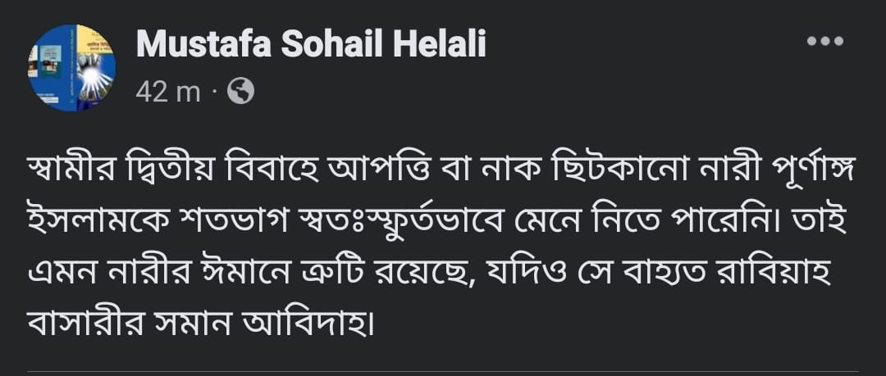

সতীনের প্রতি বিদ্বেষ নারীর সহজাতপ্রবৃত্তি। এটিকে দূর করা অসম্ভব। আর একাধিক বিয়ে…
১ মে, ২০২৩
সতীনের প্রতি বিদ্বেষ নারীর সহজাতপ্রবৃত্তি। এটিকে দূর করা অসম্ভব। আর একাধিক বিয়ে হচ্ছে মুবাহ কাজ; কোনো ফরজ/ওয়াজিব কিংবা সুন্নাতও নয় যে, নাক ছিটকালে ঈমানের উপর প্রশ্ন উঠবে। এখানে দু'টি বিষয়।
(এক) একাধিক বিয়ে বৈধতার প্রতি অসন্তুষ্টি। (দুই) স্বামীর দ্বিতীয় বিয়ের প্রতি অসন্তুষ্টি। দু'টি কখনোই এক নয়। মুসলিম নারীরা দ্বিতীয় ক্যাটাগরিতে পড়ে।
যেমন, উদাহরণস্বরূপ আমি ছাগল খাই না। মাংস দেখলেই নাক ছিটকাই। কেমন গন্ধ গন্ধ লাগে। কিন্তু খাওয়া হালাল মনে করি। এখন এ নাক ছিটকানোর কারণে আমার ঈমানের উপর প্রশ্ন তুলা অযৌক্তিক।
হুম, ‘খাওয়া হালাল হওয়া’ নিয়ে নাক ছিটকালে ভিন্ন হিসাব। কিন্তু কোনো মুসলিম নারী ‘একাধিক বিয়ে হালাল হওয়া’ নিয়ে আপত্তি করেন বলে আমার জানা নেই।
এ পোস্টে বাড়াবাড়ি হয়েছে— এটাই বলা উদ্দেশ্য। এ পোস্ট সঠিক ধরলে পৃথিবীর 99.99 পার্সেন্ট নারীকে তা.ক.ফি.র করা আবশ্যক হবে।
